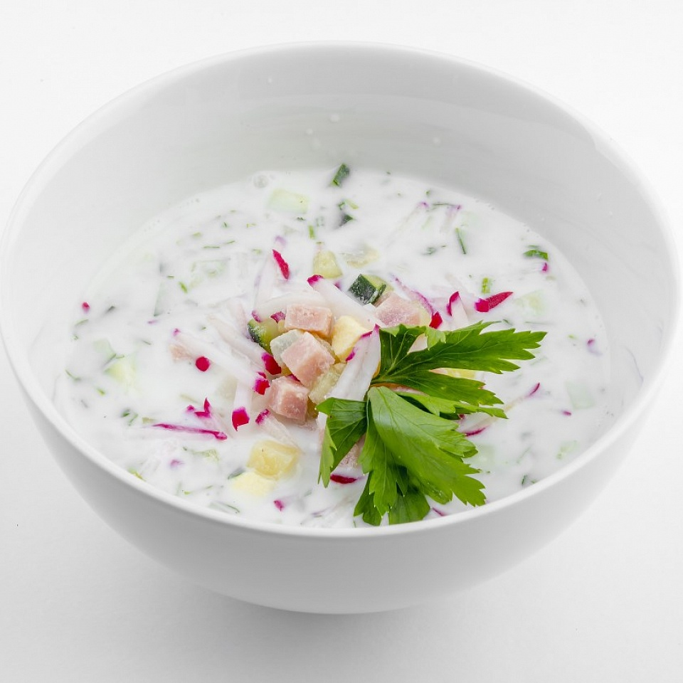

Ingredients
- Boiled potatoes – 3 pcs
- Boiled eggs – 3 pcs
- Cucumber – 2 pcs
- Sausage or ham – 200 g
- Kvass or kefir – 1 L
- Green onions, dill, sour cream – to taste
Instructions
- Dice all ingredients.
- Mix in a large bowl and pour over kvass or kefir.
- Add sour cream before serving.